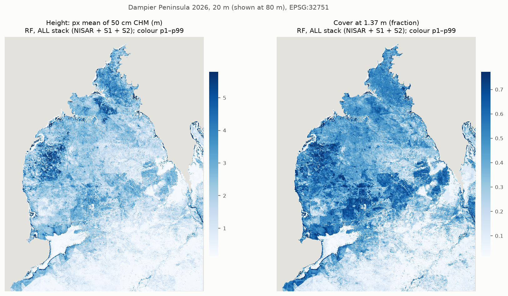
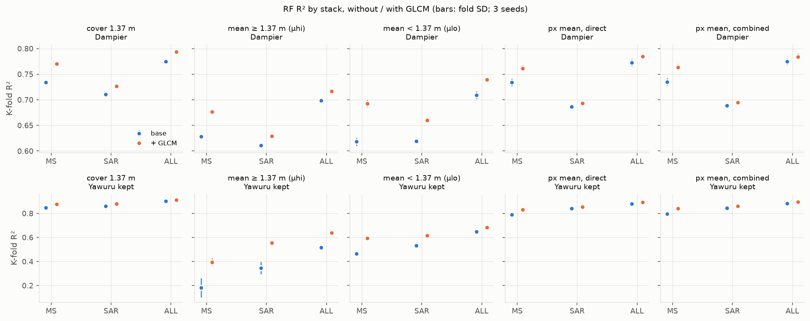
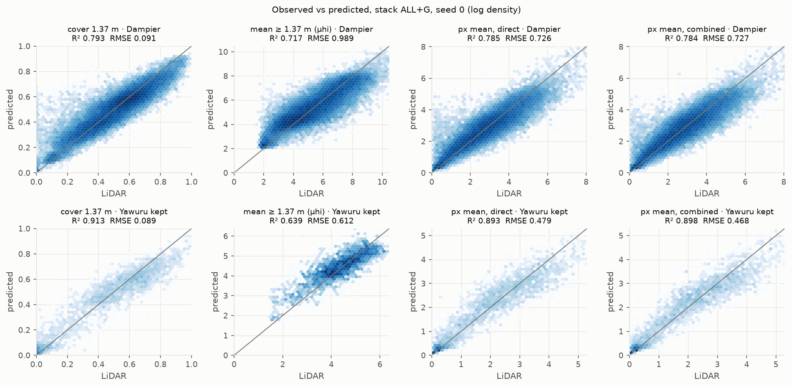
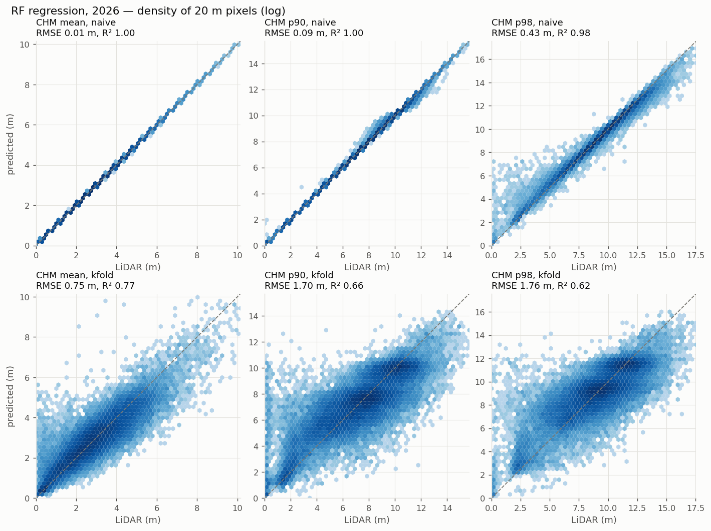

4 · Regression: height and cover directly
Random forest, 500 trees (max_features 0.33, leaf 5), 39,023 label px, random stratified 5-fold, seeds 0–2.
Result

height_mean_ALL.tif (not yet available),
cover137_ALL.tif (not yet available),
height_p98_ALL.tif (not yet available)
(20 m, EPSG:32751, float32, nodata −9999; 99.9 % of mainland px valid).
fig_regression_maps.pyK-fold, by stack (fold mean, fold SD)
| group | target | R² ALL | R² SAR | R² MS | RMSE ALL | bias ALL |
|---|---|---|---|---|---|---|
| pooled | px mean (m) | 0.795 (0.006) | 0.718 (0.006) | 0.754 (0.007) | 0.724 (0.014) | -0.000 |
| pooled | cover 1.37 m | 0.811 (0.005) | 0.754 (0.005) | 0.769 (0.005) | 0.095 (0.001) | -0.001 |
| Dampier | px mean (m) | 0.773 (0.007) | 0.687 (0.005) | 0.734 (0.007) | 0.746 (0.014) | -0.001 |
| Dampier | cover 1.37 m | 0.775 (0.004) | 0.711 (0.005) | 0.734 (0.005) | 0.095 (0.001) | +0.000 |
| Yawuru kept | px mean (m) | 0.879 (0.008) | 0.841 (0.011) | 0.789 (0.008) | 0.508 (0.016) | +0.010 |
| Yawuru kept | cover 1.37 m | 0.903 (0.007) | 0.860 (0.010) | 0.847 (0.008) | 0.094 (0.004) | -0.009 |
source: class_defs/outputs/regression/score_summary.csv (2026-11-02 14:41)
ALL = NISAR + S1 + S2 (49); SAR = NISAR + S1 (36); MS = S2 (13). Per source, never blended. ALL beats SAR and MS in every group; every gain is beyond 2 fold SD (score_gains.csv).
p98 (separate RF, same rows and folds): K-fold R² 0.724, RMSE 1.68 m (pooled). See 5 · p98 residual.
Cover × height: what was tested on the way
- Px mean = cover × mean height above 1.37 m + (1 − cover) × mean height below. Modelling the parts and combining them gives the same skill as the direct model (|ΔR²| ≤ 0.009). Direct kept.
- GLCM texture (72 features) adds +0.01 to +0.02 R², but its 100 m windows overlap the test px (optimistic). Not in the maps.
- Burnt Yawuru rows added back: no change on the shared rows (ΔR² −0.000).



Reports and code
- REPORT_regression.txt (K-fold R² / RMSE / bias, gains, importances, class check, map checks).
- REPORT_cover_height.txt (cover × height, GLCM, combined vs direct).
- Code: cover_height_rf.py (RF, stacks),
regression_2026.py (
score,maps), detached launcher regression_maps.ps1. - Plan and state:
PLAN_regression.md(not in this repo),CHECKPOINT_regression.md(not in this repo).